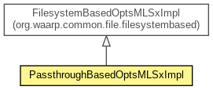

org.waarp.common.file.passthrough
Class PassthroughBasedOptsMLSxImpl
java.lang.Object
 org.waarp.common.file.filesystembased.FilesystemBasedOptsMLSxImpl
org.waarp.common.file.passthrough.PassthroughBasedOptsMLSxImpl
org.waarp.common.file.filesystembased.FilesystemBasedOptsMLSxImpl
org.waarp.common.file.passthrough.PassthroughBasedOptsMLSxImpl
- All Implemented Interfaces:
- OptsMLSxInterface
public class PassthroughBasedOptsMLSxImpl
- extends FilesystemBasedOptsMLSxImpl

Class that implements Opts command for MLSx operations. (-1) means not supported, 0 supported but
not active, 1 supported and active
- Author:
- Frederic Bregier
|
Constructor Summary |
PassthroughBasedOptsMLSxImpl()
Default empty constructor: no support at all of MLSx function |
PassthroughBasedOptsMLSxImpl(byte optsSize,
byte optsModify,
byte optsType,
byte optsPerm,
byte optsCreate,
byte optsUnique,
byte optsLang,
byte optsMediaType,
byte optsCharset)
(-1) means not supported, 0 supported but not active, 1 supported and active |
| Methods inherited from class org.waarp.common.file.filesystembased.FilesystemBasedOptsMLSxImpl |
getFeat, getOptsCharset, getOptsCreate, getOptsLang, getOptsMediaType, getOptsModify, getOptsPerm, getOptsSize, getOptsType, getOptsUnique, setOptsCharset, setOptsCreate, setOptsLang, setOptsMediaType, setOptsModify, setOptsPerm, setOptsSize, setOptsType, setOptsUnique |
| Methods inherited from class java.lang.Object |
clone, equals, finalize, getClass, hashCode, notify, notifyAll, toString, wait, wait, wait |
PassthroughBasedOptsMLSxImpl
public PassthroughBasedOptsMLSxImpl()
- Default empty constructor: no support at all of MLSx function
PassthroughBasedOptsMLSxImpl
public PassthroughBasedOptsMLSxImpl(byte optsSize,
byte optsModify,
byte optsType,
byte optsPerm,
byte optsCreate,
byte optsUnique,
byte optsLang,
byte optsMediaType,
byte optsCharset)
- (-1) means not supported, 0 supported but not active, 1 supported and active
- Parameters:
optsSize - optsModify - optsType - optsPerm - optsCreate - optsUnique - optsLang - optsMediaType - optsCharset -
Copyright © 2009-2012 Waarp. All Rights Reserved.